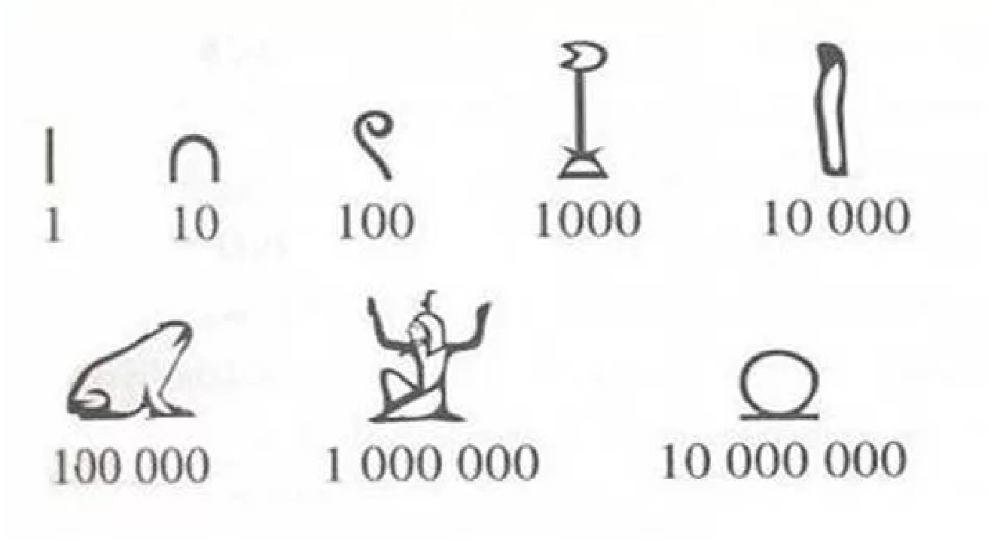
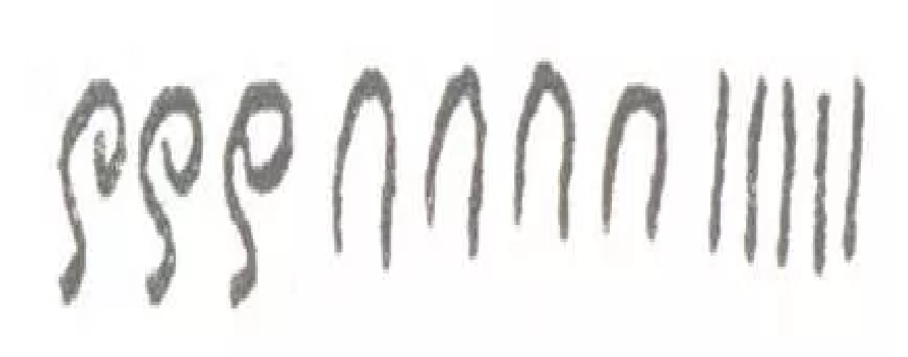
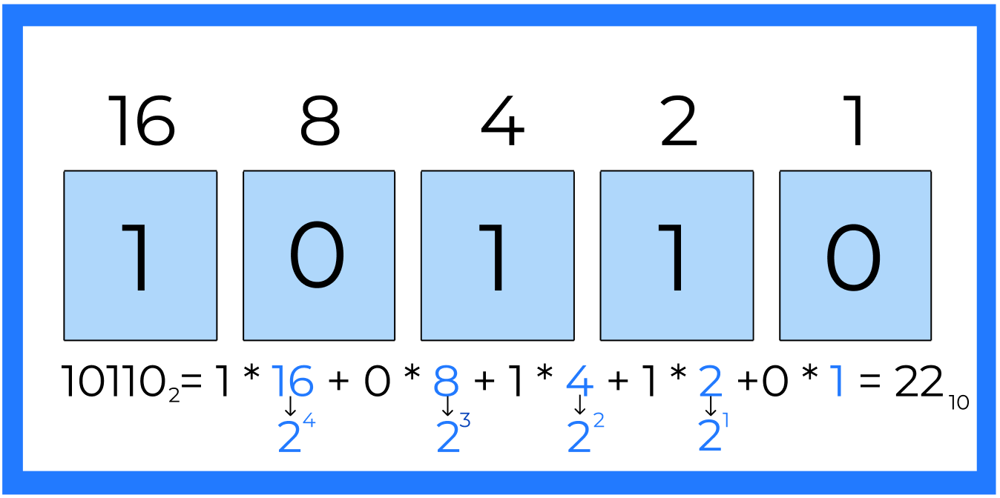

Основные понятия
Система счисления – это способ записи чисел и соответствующие ему правила действий над числами.
Совокупность всех символов, при помощи которых можно
записать любое число в заданной системе счисления называется алфавитом системы
счисления.
Символы алфавита системы счисления называются цифрами
системы счисления.
Системы счисления делятся на позиционные системы счисления и непозиционные системы счисления.

Позиционные системы счисления
В позиционной системе счисления величина, обозначаемая цифрой, зависит от позиции, в которой находится эта цифра.
Для вычислений мы используем десятичную систему счисления. Предполагается, что основание 10 связано с количеством пальцев на руках у человека. Алфавит десятичной системы счисления состоит из десяти арабских цифр цифр:
Например, число 333 = 300 + 30 + 3.
Здесь цифра 3 в самой младшей (крайней справа) позиции обозначает число 3, та же цифра 3 в следующей позиции – число 30, а в самой старшей (крайней слева) позиции – число 300.
Восьмеричная система счисления
Восьмеричная система счисления — позиционная целочисленная система счисления с основанием 8. Для представления чисел в ней используются цифры от 0 до 7.
Восьмеричная система чаще всего используется в областях, связанных с цифровыми устройствами. Характеризуется лёгким переводом восьмеричных чисел в двоичные и обратно, путём замены восьмеричных чисел на триплеты двоичных. Широко использовалась в программировании и компьютерной документации, однако позднее была почти полностью вытеснена шестнадцатеричной.
Шестнадцатеричная система счисления
Шестнадцатеричная система счисления — позиционная система счисления по основанию 16.
В качестве цифр этой системы счисления обычно используются цифры от 0 до 9 и латинские буквы от A до F. Буквы A, B, C, D, E, F имеют значения 1010, 1110, 1210, 1310, 1410, 1510 соответственно.
В качестве цифр этой системы счисления обычно используются цифры от 0 до 9 и латинские буквы от A до F. Буквы A, B, C, D, E, F имеют значения 1010, 1110, 1210, 1310, 1410, 1510 соответственно.
Непозиционные системы счисления
В непозиционных системах счисления величина, которую обозначает цифра,не зависит от положения в числе.
Например: Древнеегипетская система счисления
Число 345 в такой системе счисления будет записано как:
Вам известна непозиционная система счисления – римская, которой мы чаще всего пользуемся для нумерации (века, глав книги и пр.)
В римской системе счисления в качестве цифр используются латинские буквы:
Например, число ХХХ = 10 + 10 + 10 = 30. Цифра Х всегда равна 10, независимо от позиции, в которой она находится.
Вес позиции
Вес позиции - это число, на которое умножается число, находящееся в этой позиции при вычислении ее вклада.
Например, запись 427 означает 4 * 100 + 2 * 10 + 7 * 1.
Знаки 4,2 и 7 - это цифры.
Числа 100, 10 и 1 - это веса позиций.
Числа 400, 20 и 7 - это вклады цифр 4, 2 и 7.
Алгоритм вычисления веса позиций
Вес первой справа позиции всегда равен количеству единиц! Вес каждой следующей позиции получаестя путем умножения числа, находящегося в этой позиции, на систему счисления в которой это число счисляется в степени номера этого числа с конца(начиная с нуля)
Чтобы определить значение числа по его записи в позиционной системе счисления, нужно умножить цифры на веса их позиций и сложить результаты.
Кодирование информации
Кодирование - это перевод информации в удобную для передачи или хранения форму.
Например, тексты кодируются с помощью букв и знаков препинания. При этом одна и та же запись может быть закодирована по-разному: по-русски, по-английски, по-китайски и так далее...
Числа кодируются с помощью цифр. Цифры, к которым мы привыкли, называются арабскими. Иногда пользуются римскими цифрами. В этом случае меняется способ кодирования информации. Например, 12 и XII - это разные способы записи одного и того же числа.
Дорожные знаки - это закодированные сообщения водителям и пешеходам при помощи пиктограмм.
Музыку можно закодировать при помощи специальных знаков - нот.
Товары в магазине маркируют при помощи штрихкода, который содержит информацию о товаре и его производителе.
Штриховой код - это последовательность черных и белых полос, которая кодирует информацию в виде, удобном для считывания техническими устройствами.
Кроме того, под штрихкодом может быть помещен код в виде ряда цифр.